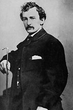

|

|

|
|
|
Abraham Lincoln's assassin, John Wilkes Booth, was born in
Maryland in 1838, the son of famous actor Junius Brutus
Booth and his mistress Mary Ann Holmes. Junius, known as
"The Mad Tragedian," was often away on tour, and even when
he was home he was often incapacitated by alcoholism and
mental disease. Young John was largely raised by his mother.
He received some formal education, mostly at St. Timothy's
Episcopal Military Academy, where he became an Episcopalian
and learned how to shoot and ride a horse.
Junius died in 1851, and shortly thereafter John decided
to follow his famous brother Edwin, into the family
business. He made his stage debut in Baltimore in August of
1855. John was known less for his acting skill, and more for
his boisterous style and penchant for gymnastic leaps around
the stage. Nonetheless, he was very well received, and by
the time he turned 25 he had played the lead in nine
different Shakespearean plays, and was receiving over 100
pieces of fan mail every week.
Booth toured the North and the South, enjoying success in
both regions of the increasingly divided nation. However, he
regarded himself as a primarily Southern actor, and he
preferred performing in front of Southern audiences. He also
became very outspoken when it came to politics. Junius had
disliked slavery, but John defended the institution and
denounced Northern abolitionists. After John Brown's failed
insurrection attempt at Harpers Ferry, Booth temporarily
suspended his acting career in order to join a militia unit
called the Richmond Grays. In that capacity, he witnessed
Brown's hanging on December 2, 1859. While in Richmond,
Booth also joined the Knights of the Southern Circle, a
secret society dedicated to promoting the expansion of
slavery and secession.
In early 1860, Booth returned to his stage career. When
War finally broke out in April of 1861, he declined to take
up arms, in deference to his mother's wishes. He continued
to speak out against Lincoln and the Union war effort, even
though he was still appearing regularly in Northern cities,
in front of increasingly hostile audiences. He was even
arrested in St. Louis in 1862 for saying that he wished "the
whole damn government would go to hell," but was released
shortly thereafter. Booth continued criss-crossing the North
and South, and evidence suggests he regularly took advantage
of the opportunity to smuggle medicine from the North to the
South.
By the fall of 1864, Booth had grown tired of being an
armchair Rebel. He was despondent over the sagging fortunes
of the Confederacy, and wanted to do something dramatic to
help out the cause. He organized a group of conspirators
with the intention of kidnapping Abraham Lincoln. Booth felt
this action would end the War, or at very least would allow
the Confederacy to negotiate for all of its prisoners-of-war
being held in Union prisons. Booth and his co-conspirators
made several attempts to abduct the President while he was
vulnerable, but each time they were foiled by bad luck or
bad timing, and eventually several of Booth's accomplices
abandoned him.
By April of 1865, the Confederacy was collapsing, and
Booth was growing increasingly desperate. He was present at
Lincoln's Second Inaugural address, and he found the
president's references to limited black suffrage to be
intolerable. Booth no longer had the time or the manpower
for a kidnapping, and so he settled upon murder. When an
announcement was made on the morning of April 14th that the
President would be attending a performance at Ford's Theater
that evening, Booth decided to strike. He had no difficulty
gaining access to the President when he arrived at the
theater, since security was lax and he was known well to the
stagehands. Booth loitered in the hallway behind the
President, waiting for a big laugh to cover the sound of the
gunshot. When the moment came, he entered the President's
box and quickly fired his single-shot Derringer into the
back of the Lincoln's head. After briefly scuffling with
Lincoln's companion, Major Henry Reed Rathbone, Booth leaped
to the stage twelve feet below, breaking his leg in the
process. With a shout of "Sic Semper Tyrannis!" ("Thus
Always with Tyrants") to the confused audience, Booth
escaped into the night.
Booth felt he would be hailed as a hero in the South, but
he was largely in error. Most individuals on both sides of
the conflict mourned Lincoln's death and cursed his
assassin. After meeting up with David Herold, one of his
co-conspirators, and pausing to get his broken leg set by
Dr. Samuel Mudd, Booth fled through Maryland into Virginia.
He and Herold were sheltered for six days by Samuel Cox, and
then relocated to the farm of Richard H. Garrett. On April
26th, while sleeping in Garrett's barn, Herold and Booth
were surrounded by Union cavalry. Herold surrendered, but
Booth refused to be taken alive. The barn was set on fire in
hopes of smoking Booth out. Booth made a desperate charge,
and was shot by Sgt. Boston Corbett, who ignored explicit
orders to keep Booth alive. After lingering for several
hours, Booth died shortly after dawn, April 27, 1865.
Source: Joan Waugh, ed., Facts on File Encyclopedia of American
History: Civil War and Reconstruction, 1856 to 1869 (New York: Facts on
File, 2003), 32-33.
|